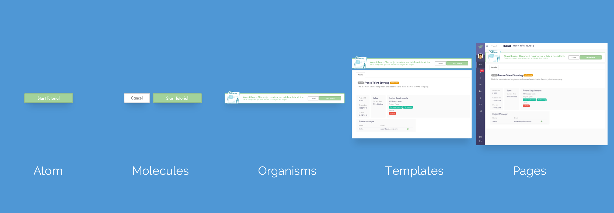
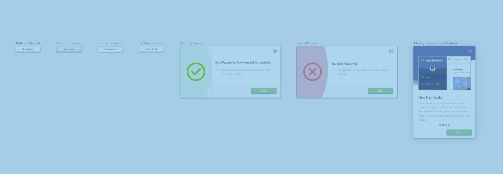
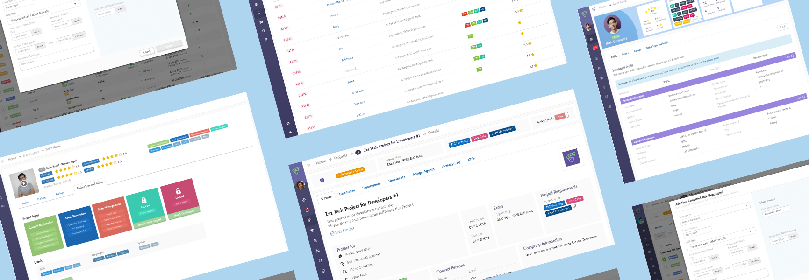

Supahands' Workplace
UI/UX

At Supahands, communication is literally our key to scale. Our primary operations rely heavily on the communication between project managers and our fleet of SupaAgents (on-demand workers), to ensure all project tasks and assignments are completed with care and precision.

Background
Supahands' Workplace is an Operations Management System worked by multiple designers, product managers and developers. The team moves very quickly to solve problems related to operations scalability and efficiency.
General Problem: As we scaled, the number of projects and SupaAgents grew rapidly. Forcing Project Managers to allocate more time to handle communications and distribution of projects to our pool of SupaAgents across South-east Asia. How can we minimize Project Managers' time while making sure that SupaAgents will keep using Supahands Platform to earn extra money?
Team:
Current Team:
Tools: Sketch App, Marvel App, Adobe Illustrator, Adobe Photoshop, Adobe After Effects
Process: We adopted Spotify's Squad as our Product Development Framework. Each Squad has autonomy to decide what to build, how to build it, and how to work together while building it. Every member of the squad should be aligned in terms of the Squad mission, product strategy, and short term goals. My role as a Product Designer will identify the key problems that we are solving and suggest the best UX solutions. I will also take charge on creating wireframes, conduct user testing and deliver pixel perfect User Interfaces for each features. User testings are always carried out to validate design solutions both for Project Managers and SupaAgents. Depending on the complexity of the feature, more user testings are conducted if required.
As the craft of Web design continues to evolve, we’re recognizing the need to develop thoughtful design systems, rather than creating simple collections of web pages. Each User Interfaces contains multiple components. With Atomic Design System implemented, I can focus more on the core UX problem without sacrificing UI. The development can also be kickstarted faster since the design language is predictable and component based.

Figure 1: Breakdown of Supahands Atomic Design System
Here are some few components which are used on Supahands platforms. These components are used multiple times with different copies based on UX the context.

Figure 2: Example of Supahands UI components
Before any of the design handed over to the development team, each designs are tested with key users using Marvel App Protoyping tool. As mentioned previously, user testings are conducted quite often because I am using User Centered Design (UCD) approach. I will either sit with the users or I can just share the online prototype link with them to gather design feedbacks.
The goal of the user testing is to make sure that the design is solving the right problem while providing a great UX. Great UX can usually be achieved by submitting to 10 Nielsen’s Usability Heuristics Principle which are;
- Visibility of system status
- Match between system and the real world
- User control and freedom
- Consistency and standards
- Error prevention
- Recognition rather than recall
- Flexibility and efficiency of use
- Aesthetic and minimalist design
- Help users recognize, diagnose, and recover from errors
- Help and documentation
Solution: To achieve economies of scale and to remain lean, Supahands had to begin facilitating our processes with automation. Furthermore, to encourage a happy pool of SupaAgents, bright colors and illustrations are used widely across Supahands' Workplace.

Figure 3: A few collection of Workplace pages
Introducing Supahands Workplace, a platform that serves as a digital project management tool for our operations workforce (project managers and SupaAgents). It is equipped with automation features that improve routing of work and task efficiency.
1. Join Projects Instantly
Instead of sending back-and-forth requests for project delegation, SupaAgents can view all available projects on Workplace, along with all the necessary information they need before
starting.
2. Work Execution and Submission on the Platform
With Supahands Workplace, we’ve created a working platform for our operations workforce, that allows all work to be executed and submitted in real-time. This caters for
increased
accuracy and automatic deduplication of data point, while also reducing project execution time.
3. Better Security
To answer our client’s security concern on data leakages, we adopted the idea of data slicing (a method to segment a large amount of data into smaller segments) on Supahands Workplace. Hence,
SupaAgents
who work on a project are only granted access to their own data output, thus preventing any chances of data leaking.
4. Track working progress
This feature was built for SupaAgents who prefer working on multiple projects at the same time. Supahands Workplace contains a record of all current and historical projects. This allows them
to keep
track of all their projects, and manage their time better.
5. Project and Personal Rating
As an initiative to promote quality work, each SupaAgent has a rating score that’s based on the average rating of all completed tasks. This also allows our platform engine and Project
Managers
to better select SupaAgents when it comes to a challenging task.
The Future of Supahands Workplace
In the near future, we aim to incorporate more automation and security features on the platform. Ultimately, we envision Supahands Workplace as our primary product platform; a
platform that
will seamlessly connect our clients to the thousands of curated and managed SupaAgents across Southeast Asia, providing them with the best of on-demand, crowdsourcing solutions:
“The ease of increasing workforce capacity, to optimise cost and time for a project.”